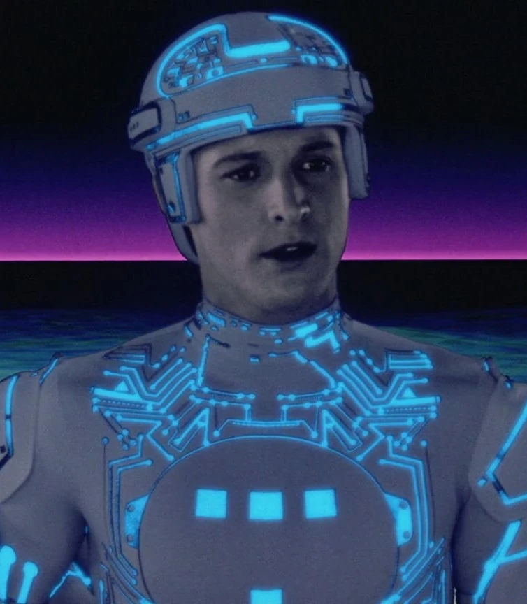
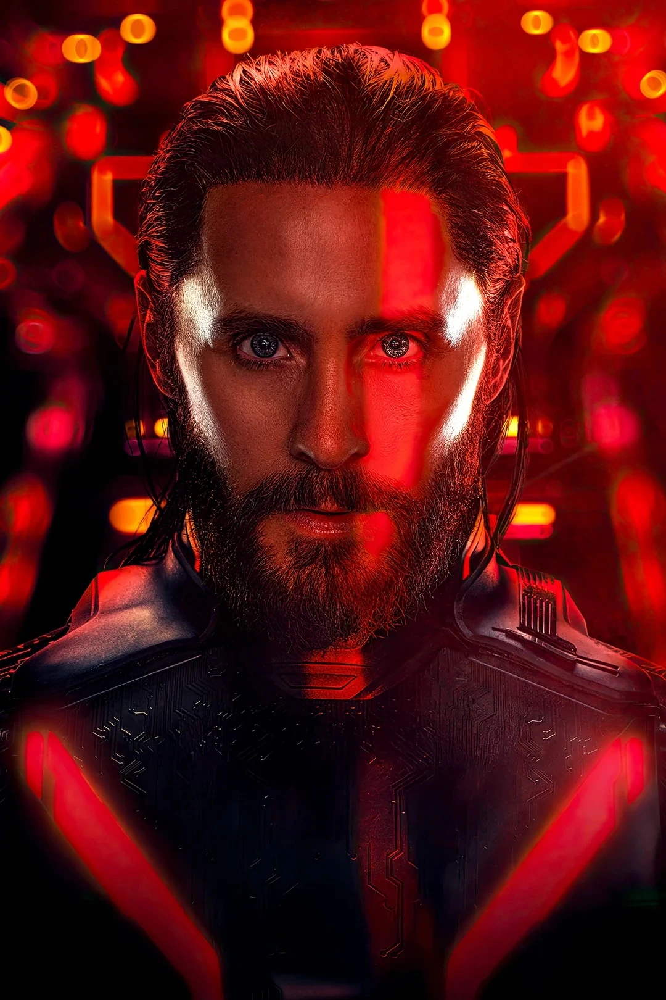
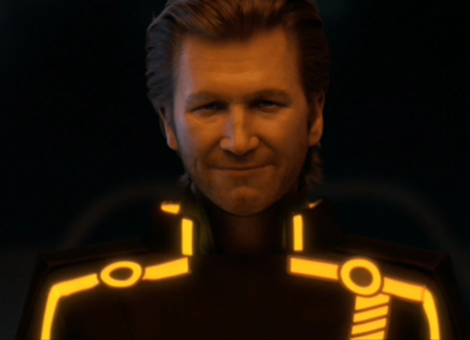
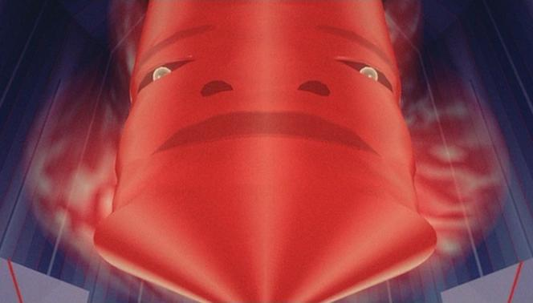

Kevin Flynn

The legendary User and the Creator. He is the first human to be digitized into the mainframe. After the events of Tron(1982), Flynn creates his own Game Grid and after his death he becomes a digital ghost.
System ID: Creator4983
STATUS: LOST IN THE SEA OF SIMULATION
Sam Flynn
The son of Kevin Flynn. A skilled hacker who was lured by CLU into the Grid. Inside the Grid, he faced CLU and tried to find his missing father.
System ID: Son Of Flynn
STATUS: ACTIVE IN THE REAL WORLD
Tron

A security program written by Alan Bradley. He is the legendary champion who fights for the Users. Brought to the Grid by Flynn, Tron protected the Grid and its programs till the very end.
System ID: Security Program
I FIGHT FOR THE USERS!
Quorra

The last surviving ISO. A type of program that possesses a unique Digital DNA that was created by the Grid itself.
Origin: System Generated Permanence
System ID: The_Last_ISO
STATUS: ACTIVE IN THE REAL WORLD
Ares

The new Master Control Program, an advanced program designed by Dillinger Jr. Ares was made to protect the Dillinger System's Grid and to find the Permanence Code.
Current Location: The Grid Real World
System ID: Leto
STATUS: ACTIVE IN THE REAL WORLD.
CLU 2.0

Created by the Creator himself, CLU is the second version to work with Flynn. Unlike its first version, CLU was made to create the "perfect" system and with his thrist for perfection, he becomes a The Grid's Tyrant.
System ID: Codified Likeness Utility
DIRECTIVE: CREATE THE PERFECT SYSTEM
Master Control Program

The MCP is a sentient AI that seized control of the ENCOM mainframe and enslaved the programs. With full control of the mainframe, he manages to digitize Kevin Flynn into the Game Grids. Luckly, Tron defeats him and saves the Game Grid.
System ID: MCTRL_751
END OF LINE, USER.